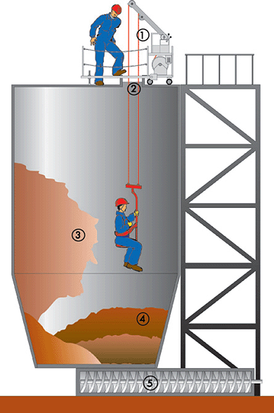
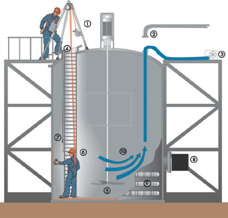

| 3.1 | Vor Beginn der Arbeiten hat die Unternehmerin oder der Unternehmer eine Gefährdungsbeurteilung durchzuführen. |
| 3.2 | Gegen die nach Abschnitt 3.1 ermittelten Gefährdungen und Belastungen sind technische oder organisatorische Maßnahmen nach den Abschnitten 4 bis 7 zu treffen. |
| 3.3 | Die festgelegten Maßnahmen sind in einem Erlaubnisschein oder in einer Betriebsanweisung nach Abschnitt 4.1.6 festzuhalten. Das Erstellen des Erlaubnisscheines anhand des Mustererlaubnisscheines dieser Regel (Anhang 1) konkretisiert den allgemeinen Gefährdungskatalog für die jeweiligen Situationen im Unternehmen. Der sorgfältig und umfassend erstellte Erlaubnisschein ist die Basis für die Gefährdungsbeurteilung im konkreten Fall. |
 Abb. 14 Mögliche Gefährdungen bei Arbeiten in einem Silo (beispielhaft) Unzureichende Rettung, mangelnde Absturzsicherung Zu enge Zugangsöffnungen, ungünstige Rettungswege Gefahr des Verschüttens Gefahr des Versinkens im Schüttgut Gefahrstellen von Maschinen |
|
| Das Ausfüllen des Erlaubnisscheines stellt somit die Gefährdungsbeurteilung für die jeweilige Arbeit im Behälter, Silo oder engen Raum für eine bestimmte Tätigkeit zu einem bestimmten Zeitpunkt dar. | |
 Abb. 15 Mögliche Gefährdungen beim Arbeiten in Behältern und engen Räumen (beispielhaft) Unzureichende Rettungsmaßnahmen, fehlende Absturzsicherung Unzureichende Abtrennung Mangelnde Lüftung, Sauerstoffmangel Zu enge Zugangsöffnungen Gefahrstellen von Maschinen Gesundheitsgefahren durch erhöhte körperliche Belastung Elektrischer Strom Strahlung Heiße oder kalte Medien Gefahrstoffe |